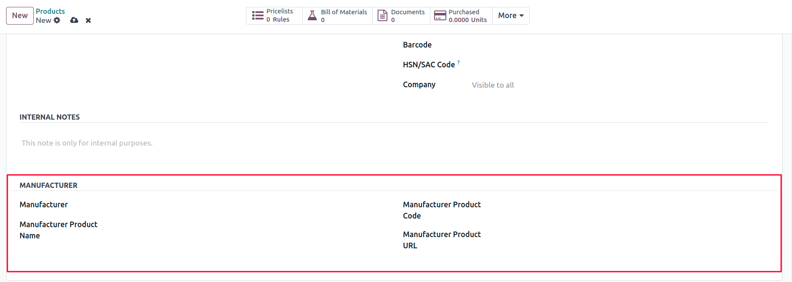

Purpose: This module allows users to capture and manage manufacturer-specific details directly on the product form in Odoo. It provides better traceability, sourcing information, and reference tracking for purchased and stocked items.

The Product Manufacturer module enhances the standard product form by introducing manufacturer-related fields. The fields include:
- Manufacturer Name
- Manufacturer Product Name
- Manufacturer Product Code
- Manufacturer Product URL
This additional information can be used for internal reference, vendor discussions, documentation, and inventory sourcing. It ensures consistency across product records and supports multi-source procurement workflows.
Developed by Apagen Solutions